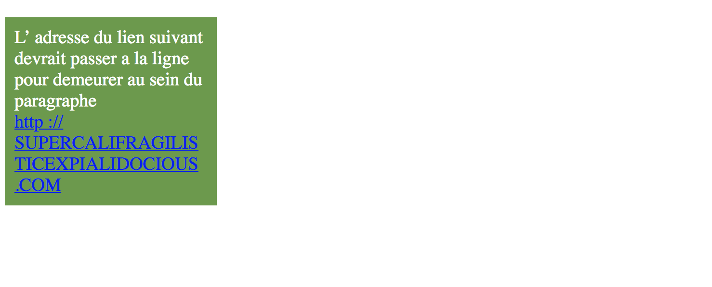
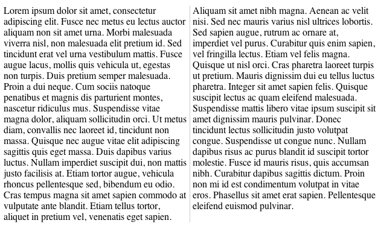
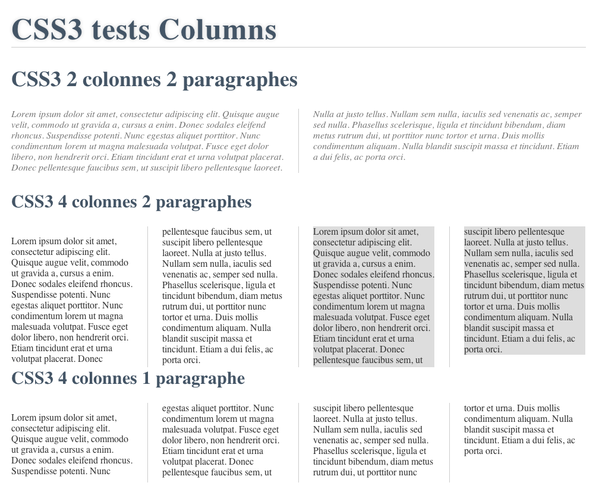

Séance 9 : CSS avancé
Compétences à acquérir lors de cette séance 9 :
Cette séance vise à vous faire travailler sur les compétences liées à l'utilisation avancée du css
- Savoir créer des formulaires optimisés et accessibles
- Savoir mettre en forme de texte
- Comprendre les css transformation et transition
Savoir créer des formulaires optimisés et accessibles
Création d'un formulaire
Dans le grand chantier du html5, une place d’honneur a été réservée aux éléments interactifs et aux formulaires. Plutôt rustiques avant, les éléments de saisie de la dernière génération se voient dotés de nouveaux types de champs, de nouvelles fonctions, voire de tests d’expressions régulières sur leur contenu textuel. En voici quelques-uns :
- email : le champ requiert un contenu au format d’adresse électronique
- url : le champ accueille des URL
- tel : accueille des numéros de téléphone
- number : champ acceptant uniquement des caractères numériques
- color : champ prévu pour les chaînes représentant une valeur de couleur
<input type ="email" name ="email">
Même si les fonctionnalités de ces éléments demeurent encore assez timides, l’information apportée par le type offre la possibilité d’appliquer des mises en forme spécifiques. Vous pouvez par exemple agrémenter les champs d’adresse électronique avec un pictogramme caractéristique en ciblant le sélecteur d’attribut.
[type ="email"] {background:url(email.png) left center no-repeat;}
Chacun des types de champ obéit à une norme qui définit les valeurs acceptées ou rejetées. Ainsi, il est possible de vérifier quels éléments sont invalides à l’aide des sélecteurs CSS3 valid: et invalid:
input[type="email"]:valid{background:green;}
Au cas par cas, certains attributs complémentaires peuvent élargir les fonctionnalités des nouveaux éléments de formulaire. Le type number accepte par exemple les attributs min,max,step et value.
<input type ="number" min="0" max="10" step ="2" value ="6">
Cette ligne permet d’indiquer qu’il s’agit d’un champ de type numérique, que la valeur minimale acceptée est 0 et celle max est 10. le step à 2 indique qu’à partir de 0 seules les valeurs 0; 2; 4; 6; 8; 10 sont acceptées. La valeur par défaut est 6.
date : Type permettant d’afficher un contrôle de date
Cette ligne permet de générer une zone de champ de recherche avec un texte par défaut, le curseur placé à l’intérieur de la zone et l’interdiction de l’autocomplétion.<input type ="search" results ="10" name ="recherche" placeholder ="rechercher" autofocus autocomplete ="off">
<form > <input name ="name" type ="text" placeholder ="champs requis" required > <input type ="submit" value ="GO"> </form >
Les champs bénéficiant de cet attribut doivent nécessairement être remplis lors de la soumission du formulaire, sans quoi la validation est refusée[required]{border:1px solid orange;}
S'auto-évaluer : savez-vous créer un formulaire optimisé et accessible ?
Question 1
Regardez la vidéo ci-dessous et créer le formulaire permettant de reproduire le même comportement. Le bord de couleur rouge indique que le contenu n'est pas valide. Le mot (required) doit s'ajouter automatiquement via le css (regardez la doc de :after)
Rendre son formulaire accessible
Votre formulaire fonctionne, mais est-il de qualité ? Et plus précisément respecte-t-il la norme RGAA ? Lisez cette page.
A minima, ajoutez un attribut title au bouton et, au bon endroit, des balises labels permettant de relier chaque mot du formulaire (nom, URL, ...)
Mais comment choisir les bons labels ? Vous pouvez vous inspirer des microdata. Ce sont des schémas permettant d'utiliser des labels parmi une liste prédéfinie (plusieurs thèmes possibles : cinéma, personnes, ). Lisez cet article intéressant. Dès lors que vous utilisez des labels dans un formulaire, mais surtout quand vous écrivez des données (dont le schéma a été défini) dans une page, il faut utiliser les microdata.
La navigation est un autre aspect de la qualité d'un site web. Généralement votre formulaire est nativement navigable au clavier. Par contre il faut faire attention que l'ensemble du site suive un ordre logique lors des appuis successifs de la touche "tabulation". Lisez rapidement cet article et celui-là. Ils vous donnera des informations sur les bases de la navigation au clavier. Pensez à faire attention à la navigation au clavier dans votre projet web.
Mise en forme d'un texte
Gérer les dépassements/césures
Dans un texte de contenu, lorsqu’un mot sans espace ni trait d’union est plus large que la dimension définie pour son parent, le comportement normal consiste à faire déborder le texte au-delà de la largeur normale du cadre, sans retour à la ligne et sans que la dimension du conteneur ne soit affectée. Il est toutefois possible de forcer la césure d’un mot long à l’aide de la propriété CSS word-wrap appliquée au parent et qui aura pour effet de couper le mot à un endroit arbitraire afin de provoquer un retour à la ligne.
S'auto-évaluer : Savez-vous gérer les dépassements/césures ?
Etudiez le code suivant. Jouez avec les différentes options de word-wrap et observez les résultats.

Mettre en page correctement des blocs de texte
CSS3 offre la possibilité de présenter un texte sur plusieurs colonnes, à l’instar des journaux papier, via column et ses propriétés dérivées. Ces différentes propriétés peuvent être scindées en trois parties fonctionnelles :
- nombre et taille des colonnes :
- columns : nombre de colonnes et éventuellement la largeur de chaque colonne
- column-min-width : largeur minimale de chaque colonne
- column-width-policy : mode d’affichage des colonnes (flexible, strict ou inherith)
- ce qu’il y a entre les colonnes :
- column-gap : distance entre chaque colonne
- column-rule : couleur, style et largeur de la séparation entre colonnes
- Enfin une propriété column-span pour étendre un élément sur plusieurs colonnes
Question 2
Modifiez ce code (en jouant sur les attributs column-gap, columns et column-rule) afin qu'il donne le même visuel que l'image.

S'auto-évaluer : Savez-vous mettre en forme un texte ?
Question 3
Créez un code HTML/CSS afin qu'il donne le même visuel que l'image.

CSS transformations et CSS transition
La propriété CSS3 transform permet d'appliquer des transformations en deux dimensions sur un élément : rotation, zoom, déformation et perspective.
scale : fonction de zoom
Cette fonction agrandit ou réduit les dimensions d'un élément selon un ration (< 1 diminue la taille, >1 l'agrandit). La place occupée dans le flux demeure identique (si l'élément est agrandit, ses frères ne seront pas poussés en conséquence). Selon les navigateurs (et la date où vous lisez ces lignes) il est possible que vous deviez utiliser les préfixes classiques afin que la transformation soit interprétable sur la majorité de navigateurs.
transform: scale(0.5); //réduire de moitié l'élément
rotate : rotation
Le concept de rotation via la fonction rotate dont les valeurs sont exprimées en degrés (deg) ou radians (rad). Ainsi, pour tourner les éléments de 45 degrés dans le sens des aiguilles d'une montre, nous décrirons :
transform : rotate(45deg);
skew, translate : modifier les perspectives, translation
Le panel des effets de transformation couverts par les spécifications de CSS3 ne se limite pas aux rotations et aux grossissements. Des déformations de toutes sortes et des translations sont également possibles.
skew, modifie la perspective de l'élément en tirant sur ces coins de manière à obtenir au final une forme parallélépipédique. La première valeur concerne l'axe X, la seconde l'axe Y.
transform : skew(-25deg, 10deg);
translate opère une translation de l'élément sur les axes Y et X.
transform : translate(100px,100px);
CSS transitions
Il est possible de réaliser des transitions (basiques) et donc d'animer le contenu d'une page web. Pour définir une nouvelle transition animée, il est nécessaire de préciser au minimum deux coposantes :
- la (ou les) propriété(s) à animer (transition-property)
- la durée de l'animation (transition-duration)
Les deux propriétés minimales nécessaires pour rendre fonctionnelle une transition en CSS3 sont ces deux dernières. Il existe cependant d'autres propriétés CSS spécifiques aux transitions : transition-timing-function, transition-delay et la notation raccourcie transition qui cumule tous ces aspects.
La propriété transition-property accepte 3 valeurs : all (valeur par défaut) : toutes le propriétés possibles seront animées), propriete le nom d'une propriété pouvant être animée, none : aucune propriété ne sera animée.
La propriété transition-timing-function détermine la fluidité de l'animation. Les mots-clefs sont : ease : rapide sur le début et ralenti sur la fin, linear (valeur par défaut) : vitesse constante sur toute la durée de l'animation, ease-in : lent sur le début et accélère de plus en plus, ease-out : rapide sur le début et décélère sur la fin, ease-in-out : le départ et la fin sont lents.
La notation raccourcie transition : transition-property transition-duration transition-timing-functiontransition-delay; permet de décrire facilement et de manière concise les différentes propriétés en jeu à l'aide d'une seule propriété.
/*Creer une transition d'une seconde de toutes les propriétés d'une image lors de son survol*/ img{ transition : all 1s ease-in; } img:hover{ width: 400px; transform : rotate(90deg); }
une bonne référence expliquant tout cela
S'auto-évaluer : savez-vous créer des animations ?
Question 4
Complétez l'exemple à l'adresse suivante afin qu'il donne un rendu proche de celui ci-dessous.
Question 5
Ecrivez l'ensemble d'un code HTML/CSS afin qu'il donne un rendu proche de celui ci-dessous.